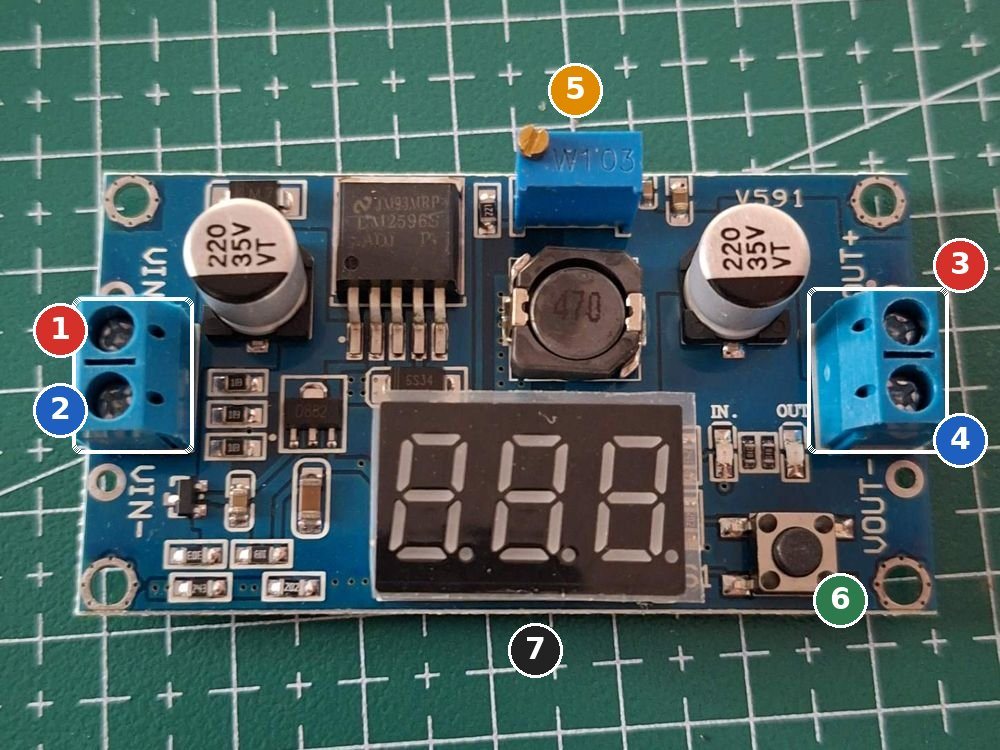
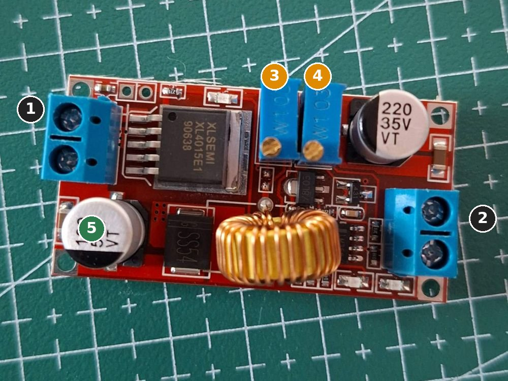

Bagian paling penting untuk keselamatan board-mu. Di akhir bagian ini kamu punya tiga sumber tegangan yang sudah diukur: 5 V untuk otak dan badan, 5 V untuk kamera, dan 6 V untuk motor dan servo.
0 / 0 langkah
Sebelum mulai
Empat aturan daya
Ukur dulu, baru sambung
Setiap konverter disetel dan diukur tanpa beban. Konverter baru sering keluar dengan tegangan sama dengan masukan (8 V), dan itu cukup untuk merusak ESP32.
Merah +7,4 V, hijau +6 V, hitam GND
Kabel daya 22 AWG memakai tiga warna ini saja. Kabel 5 V memakai 26 AWG merah-hitam. Modul konverter dan BMS tidak punya pelindung polaritas terbalik.
Saklar OFF saat merakit
Ubah kabel hanya saat saklar utama mati. Kalau ada yang panas, berasap, atau berbau, matikan saklar dan cabut sel.
Baterai bukan mainan
Dua sel 18650 bisa mengeluarkan puluhan ampere kalau dihubung singkat. Jangan biarkan ujung kabel plus dan minus bersentuhan.
Dasar
Dua keterampilan yang dipakai terus
Memakai multimeter
Multimeter-mu. Kabel hitam selalu di soket COM.
Tegangan DC (simbol V dengan garis lurus): kabel merah di soket VΩmA, putar ke angka 20 di area V⎓. Probe hitam ke minus, merah ke plus. Angka negatif berarti probe terbalik, tidak merusak.
Kontinuitas (simbol nada/dioda): saat daya MATI, tempelkan dua probe ke dua titik. Bunyi = tersambung langsung.
Hambatan Ω: untuk memastikan nilai resistor, misalnya 2k terbaca sekitar 1,98-2,02 kΩ.
Jangan mengukur tegangan dengan kabel merah di soket 10A. Soket itu nyaris 0 Ω, jadi menempelkannya ke baterai sama dengan korsleting. Soket 10A di multimeter ini juga tanpa sekring.
Menyolder
Solder, timah 0,8 mm, flux RMA-223, dan kawat penyedot timah milikmu.
Panaskan solder 2-3 menit. Bersihkan ujungnya, lalu lapisi sedikit timah supaya mengkilap.
Oleskan sedikit flux di titik yang akan disolder. Flux membuat timah mengalir rata.
Tempelkan ujung solder ke pad dan kaki sekaligus 1-2 detik, lalu sentuhkan timah ke pad (bukan ke ujung solder). Angkat timah dulu, baru solder.
Hasil yang baik berbentuk kerucut kecil mengkilap. Kusam atau berbentuk bola = "solder dingin", panaskan ulang.
Timah menyambung dua pin? Tempelkan kawat penyedot di atasnya, panaskan, timah terserap.
Asap flux jangan dihirup. Kerjakan dekat jendela atau kipas.
Trik pin header lurus
Tancapkan pin header ke breadboard dulu, letakkan modul di atasnya, lalu solder. Breadboard menahan pin tetap tegak lurus. Solder satu pin dulu, cek modul rata, baru lanjutkan sisanya.
Menyambung dua kabel
Kupas 5-8 mm, masukkan heat shrink lebih dulu, pilin kedua ujung, solder, lalu geser heat shrink menutupi sambungan dan panaskan dengan badan solder atau korek (jangan sampai terbakar). Potong heat shrink sekitar 2 cm dari batang 40 mm.
Sambungan
Heat shrink Taffware-mu
Kabel 26 AWG, kabel servo, kaki kapasitor
2 mm
Dua kabel 22 AWG, kabel motor
3 mm
Tiga atau empat kabel sekaligus (titik tengah + 4.2V, sambungan servo + kapasitor)
4 mm
Kaki saklar dan sekring
6 mm
Pilih ukuran yang masih bisa digeser melewati sambungan; setelah dipanaskan menyusut sekitar setengahnya. Hitam untuk GND, merah untuk plus supaya ujung kabel mudah dikenali.
Langkah
Rakit sistem daya
Kerjakan berurutan. Setiap tahap punya tanda berhasil sebelum lanjut ke tahap berikutnya.
Tahap 1
Cek kedua sel 18650
2 sel RakkiPanda 18650Multimeter
Dua sel 18650 milikmu. Keduanya harus diperlakukan sebagai satu pasangan.
Kenapa begitu? Dua sel dirangkai seri, jadi arus yang sama lewat keduanya. Sel yang lebih kosong akan habis duluan dan BMS memutus daya lebih cepat. Mulai dari dua sel yang setara membuat keduanya berumur panjang.
Berhasil kalau
Kedua sel di antara 3,0 dan 4,2 V, dan selisihnya kurang dari 0,1 V. Sel yang baru penuh terbaca sekitar 4,15-4,2 V.
Kalau tidak berhasil
Terbaca di bawah 2,5 V: sel sudah terlalu kosong. Jangan dipakai di robot.
Terbaca 0 V: cek probe di soket yang benar (COM dan VΩmA) dan dial di V⎓, bukan V~.
Kenapa begitu? BMS memotong jalur minus (⊖) kalau sel terlalu kosong, terlalu penuh, atau arus terlalu besar. Pad 4.2V dipakai untuk mengukur dan menyeimbangkan tiap sel, jadi arusnya kecil dan kabel tipis cukup. Spesifikasi BMS-mu: arus kontinu 10 A, puncak 20 A, proteksi hubung singkat. Batas BMS saat kosong lebar (2,3-3,0 V per sel), jadi robot tetap harus mematikan diri lebih dulu di sekitar 3,3 V per sel (6,6 V total) lewat ADC baterai. Sel diisi di charger iMFG (4,2 V per sel), bukan lewat BMS.
Berhasil kalau
Dua kabel (4.2V dan P−) terpasang kuat (tarik pelan, tidak lepas), dan tidak ada timah yang menyambung dua pad.
Tahap 3
Rangkai dua holder dan pasang sel
2 holder 18650 1 slot (dengan kabel bawaannya)BMS yang sudah berkabelHeat shrink 3 dan 4 mmMultimeter
Posisi holder, BMS, dan nomor kabel: peta lantai 2 di Tahap 2. Urutan menyambung: 0V dulu, lalu titik tengah, lalu 8.4V. Melepas dengan urutan terbalik.
Berhasil kalau
P+ ke P− terbaca 7,4-8,4 V. Selama ini pad ⊕ dan kabel P− jangan sampai bersentuhan.
Kalau tidak berhasil
P+ ke P− terbaca 0 V padahal 0V ke 8.4V benar: proteksi BMS sedang terkunci (sering terjadi saat sel pertama kali dipasang). Lepas kedua sel, tunggu 10 detik, pasang lagi sel 1 lalu sel 2. Kalau tetap 0 V, dengan P+ dan P− tidak tersambung ke apa pun, sentuhkan sebentar seutas kabel antara pad ⊖ dan pad 0V untuk "membangunkan" BMS. Masih 0 V: cek kabel 0V dan 8.4V tidak tertukar.
Tegangan total sekitar 0 V atau hanya satu sel: sambungan titik tengah lepas, atau satu sel terbalik. Cabut sel, cek tanda +.
Ada yang panas saat sel dimasukkan: cabut sel segera. Biasanya ada korsleting atau sel terbalik.
Dudukan sekring dan sekring blade.Saklar rocker. Cek tulisan arus maksimum di badannya.
Kenapa begitu? Sekring dipasang sedekat mungkin dengan baterai, supaya kalau ada kabel yang terkelupas dan korsleting di mana pun setelahnya, sekring putus sebelum kabel terbakar.
Berhasil kalau
Saklar benar-benar memutus dan menyambung rel plus, sekring terpasang di antara BMS dan saklar, dan WAGO + / WAGO − terbaca 7,4-8,4 V saat saklar ON.
Kalau tidak berhasil
Kabel mudah lepas dari WAGO: kupasannya kurang panjang atau tuas belum menutup penuh. Kupas tepat 11 mm, masukkan sampai mentok, tutup tuas sampai berbunyi klik, lalu tarik pelan.
Tahap 5
Setel LM2596 #1 ke 5,0 V (rel logika)
LM2596 dengan voltmeterObeng minus kecilMultimeter

1IN+ masukan plus (dari rel plus baterai). 2IN− masukan minus (rel GND). Tulisan VIN+ dan VIN− ada di PCB.
3OUT+ keluaran 5 V. 4OUT− keluaran minus.
5 Trimpot biru: diputar dengan obeng minus kecil untuk mengatur tegangan keluaran. Perlu belasan putaran untuk perubahan besar.
6 Tombol: menukar layar antara tegangan masuk (LED IN menyala) dan keluar (LED OUT). 7 Layar voltmeter. Layar ini perkiraan; percayai multimeter.
Geser gambar ke samping untuk melihat semuanya.
Dilihat dari atas, posisi barang sama persis dengan di robot (gambar tata letak Bagian 6). Nomor di gambar = nomor di tabel dan di langkah. Kabel 7 dan 8 datang dari lantai 2 lewat lubang H7 dan H8. Kabel 11, 12, 15, 16 naik-turun ke XL4015 di lantai 2.
Kenapa begitu? LM2596 adalah konverter buck: memotong-motong tegangan baterai dengan cepat lalu menghaluskannya, jadi jauh lebih efisien dari regulator biasa. Keluarannya harus sedikit di atas kebutuhan ESP32 (masukan 5 V), tapi tidak lebih dari 5,5 V.
Berhasil kalau
Multimeter membaca 4,95-5,1 V di OUT+ ke OUT−, dan tetap sama setelah dimatikan-dinyalakan.
Kalau tidak berhasil
Tegangan tidak berubah walau trimpot sudah diputar puluhan kali: putar ke arah sebaliknya. Trimpot ini tidak punya batas yang terasa.
Keluaran sama dengan masukan (sekitar 8 V): trimpot masih di posisi maksimum. Teruskan memutar ke arah yang menurunkan tegangan.
Tahap 6
Setel XL4015 ke 6,0 V (rel motor dan servo)
XL4015Obeng minus kecilMultimeter

1 dan 2: dua terminal sekrup. Tulisan IN dan OUT ada di bawah papan. Biasanya masukan di sisi kapasitor 100 µF 50 V (5), keluaran di sisi kapasitor 220 µF 35 V. Balik papan dan baca tulisannya sebelum menyambung.
3 dan 4: dua trimpot. Satu mengatur tegangan (CV), satu membatasi arus (CC). Yang mana, kita cari di langkah 4.
Berhasil kalau
OUT+ ke OUT− terbaca 5,9-6,1 V tanpa beban.
Kalau tidak berhasil
Nanti saat motor jalan tegangan turun jauh dan ada LED merah menyala di XL4015: batas arus (CC) terlalu rendah. Putar trimpot CC beberapa putaran searah jarum jam, lalu cek lagi.
Tahap 7
Setel LM2596 #2 ke 5,0 V (rel kamera)
LM2596 kedua (kalau sudah ada)Multimeter
Berhasil kalau
Keluaran 5,0 V. Rel kamera terpisah membuat lonjakan arus WiFi kamera tidak mengganggu ESP32-S3.
Kenapa begitu? Resistor 330 Ω membatasi arus LED sekitar (5 - 2) / 330 = 9 mA. Tanpa resistor, LED langsung putus.
Berhasil kalau
LED menyala di kedua rel dan tegangan tidak berubah. Kamu sekarang punya sumber daya yang aman untuk ketiga board.
Ringkasan
Peta jalur daya
Geser gambar ke samping untuk melihat semuanya.
Lantai 2 belakang: baterai sampai saklar.
Geser gambar ke samping untuk melihat semuanya.
Lantai 1: WAGO dan ketiga konverter. Panjang tiap nomor ada di tabel Bagian 6.
Titik ukur
Harus terbaca
Kalau tidak
P+ ke P− BMS
7,4 - 8,4 V
Tahap 3
Rel plus ke GND, saklar ON
7,4 - 8,4 V
Tahap 4
OUT LM2596 #1
4,95 - 5,1 V
Tahap 5
OUT XL4015
5,9 - 6,1 V
Tahap 6
OUT LM2596 #2
4,95 - 5,1 V
Tahap 7
Rel plus, saklar OFF
0 V
saklar salah kaki
Penting
Mode meja dan mode jalan
Mode meja (USB ke laptop)
Dipakai saat upload kode dan membaca Serial Monitor. Board mendapat daya dari USB. Kabel 5 V merah dari LM2596 ke board dilepas, tapi kabel GND tetap tersambung. Motor dan servo tetap boleh dapat daya dari XL4015.
Mode jalan (baterai)
USB dicabut, kabel 5 V merah dipasang ke pin 5V papan ekspansi. Jangan pernah mencolok USB dan kabel 5 V dari LM2596 bersamaan: dua sumber 5 V yang sedikit berbeda saling melawan, dan arusnya bisa mengalir balik ke port USB laptop.
Supaya mudah, pakai kabel jumper betina khusus (misalnya warna merah) untuk 5 V ke tiap board. Itulah satu-satunya kabel yang dicabut-pasang saat pindah mode.
Perawatan
Cara mengisi baterai
Charger iMFG 2 slot: masukan 5 V, keluaran 4,2 V 1 A per sel.
Matikan saklar, keluarkan kedua sel dari holder.
Masukkan ke charger dengan arah + sesuai tanda di slot. Colok charger ke adaptor 5 V 2 A milikmu.
Tunggu sampai lampu menandakan penuh. Isi dekat dirimu, di permukaan yang tidak mudah terbakar, jangan ditinggal tidur.
Ukur: tiap sel sekitar 4,15-4,2 V. Masukkan lagi ke holder dengan urutan sel 1 lalu sel 2.
Selalu pakai dua sel yang sama sebagai pasangan. Kalau nanti punya sel ketiga, jadikan cadangan, jangan dicampur.
Simpan lama (lebih dari sebulan) di sekitar 3,7-3,8 V per sel, di tempat sejuk.